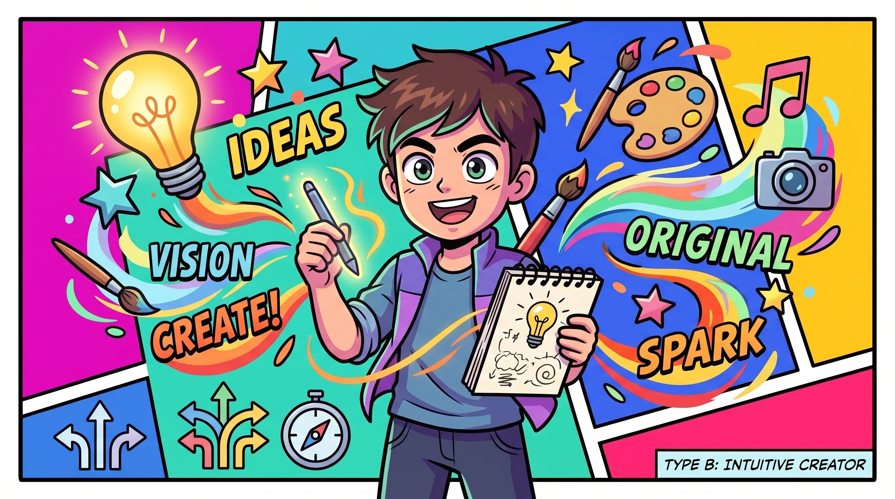

DIAGNOSIS RESULT
前線推進コマンダー

机上の議論にとどまらず、素早い意思決定と圧倒的な行動力で現実を動かしていく実行型タイプです。不確実性の高い局面でも立ち止まらず、トライ＆エラーを繰り返しながら最短距離で成果を掴み取る突破力を備えています。
向いている領域・環境：
事業開発（BizDev）、セールスリード、現場統括、スタートアップ初期フェーズなど、スピードと個人の裁量がダイレクトに結果へ直結する環境
結果を画像付きでXにポスト
事業開発（BizDev）、セールスリード、現場統括、スタートアップ初期フェーズなど、スピードと個人の裁量がダイレクトに結果へ直結する環境